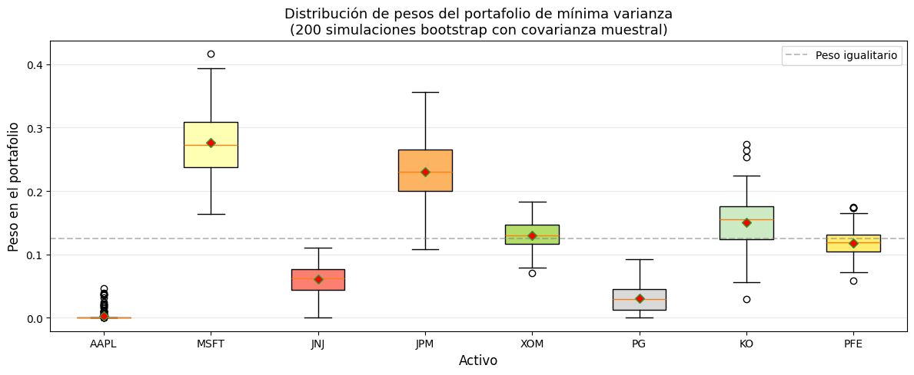
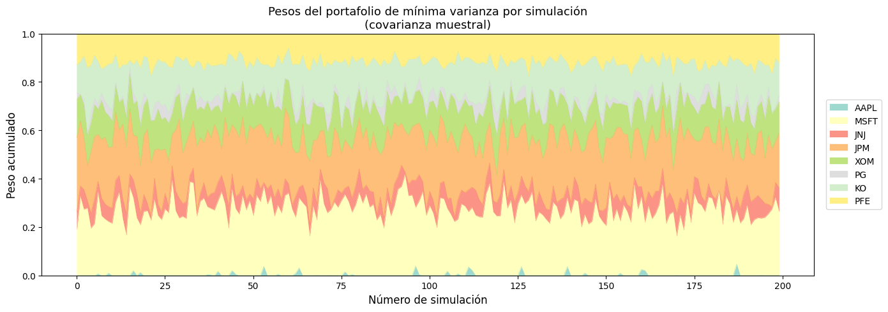
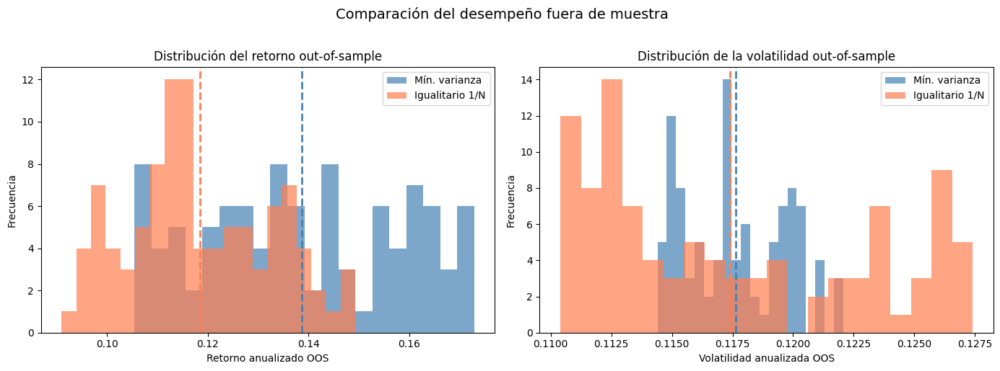
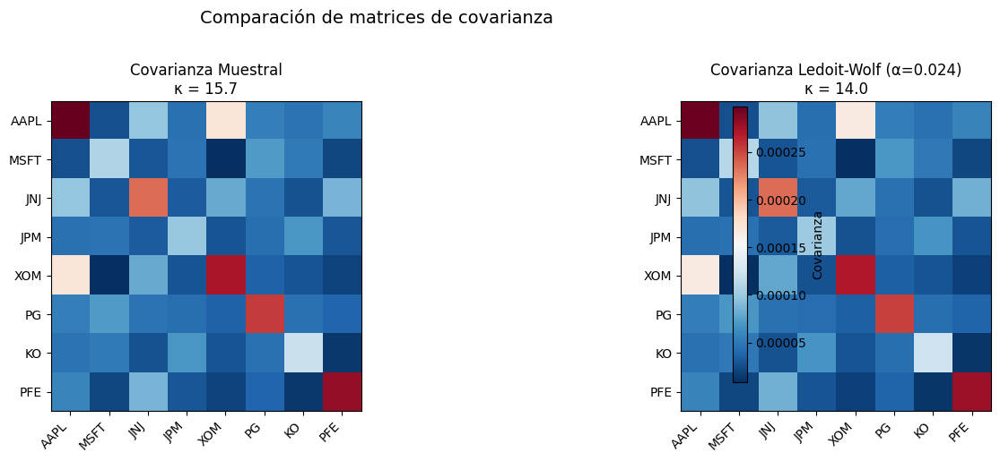
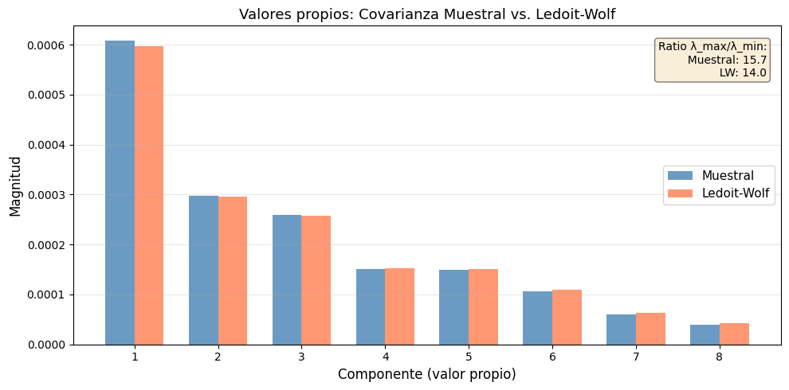
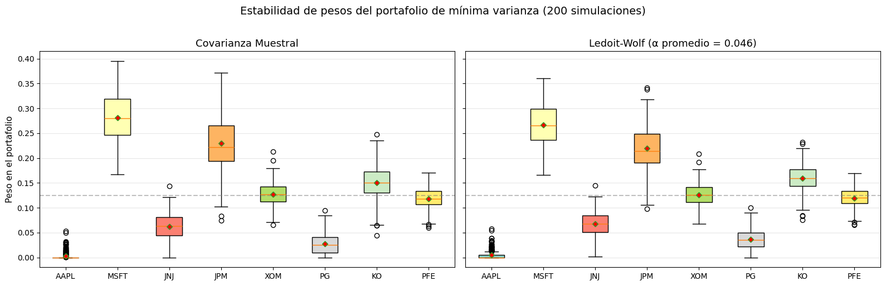
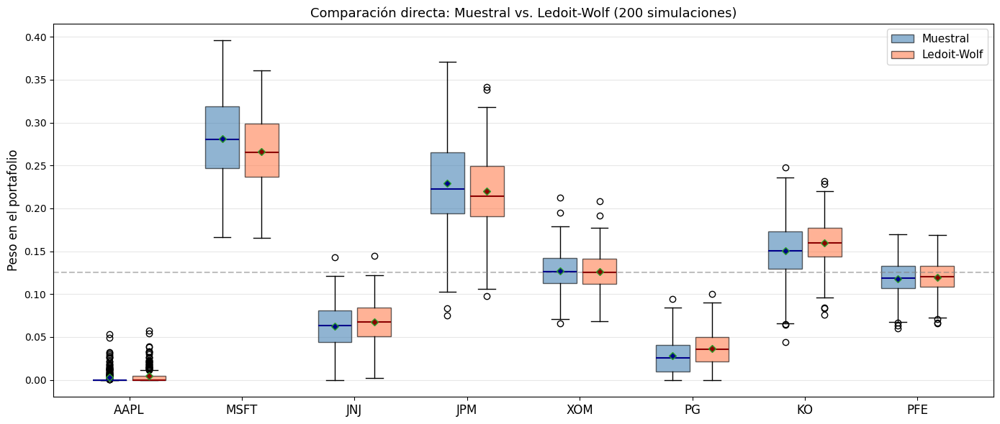
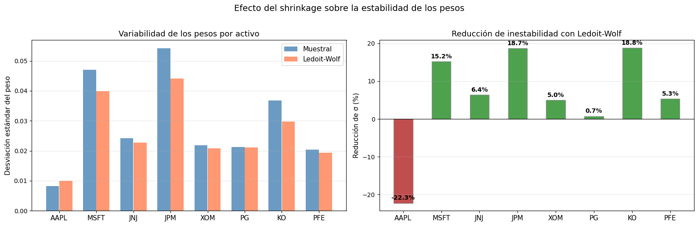
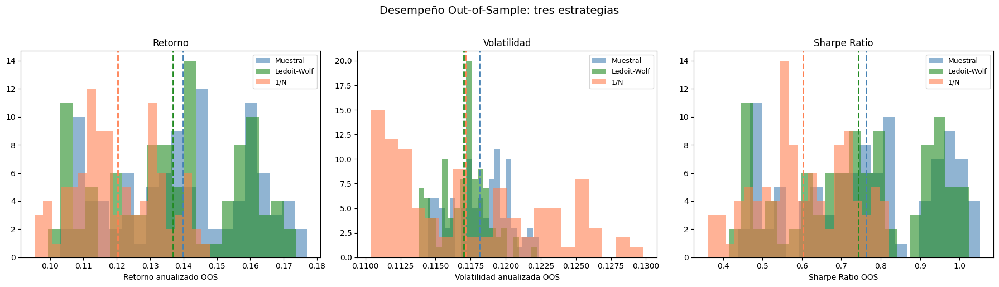
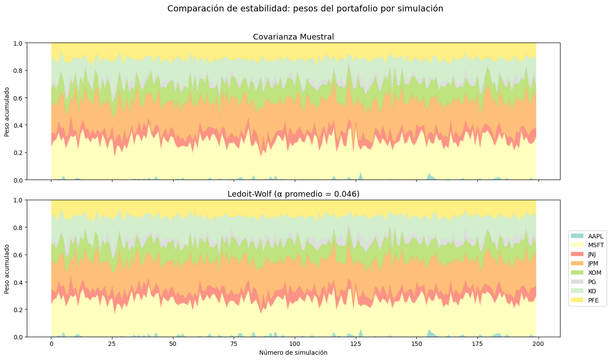

8. Shrinkage de la Matriz de Covarianza: Estimador de Ledoit-Wolf#
Motivación: el problema de la inestabilidad#
La optimización de media-varianza de Markowitz requiere estimar dos insumos:
El vector de rendimientos esperados \(\mu\)
La matriz de covarianza \(\Sigma\)
En la práctica, la matriz de covarianza muestral \(\hat{\Sigma}\) es una estimación ruidosa de la verdadera \(\Sigma\), especialmente cuando:
Problema |
Consecuencia |
|---|---|
Pocas observaciones relativas al número de activos (\(T/N\) pequeño) |
La matriz puede ser singular o casi singular |
Valores propios extremos |
Portafolios concentrados en pocas direcciones |
Errores de estimación amplificados por la inversión \(\hat{\Sigma}^{-1}\) |
Pesos inestables y extremos |
Esto causa que los portafolios «óptimos» cambien drásticamente ante pequeñas perturbaciones en los datos, haciéndolos poco confiables fuera de la muestra.
¿Qué veremos en este cuaderno?#
Simulaciones de Monte Carlo para visualizar la inestabilidad de los portafolios óptimos fuera de la muestra (out-of-sample)
Implementación del estimador de Ledoit-Wolf y comparación de la estabilidad de los pesos del portafolio frente a la matriz de covarianza tradicional
[46]:
import numpy as np
import pandas as pd
import matplotlib.pyplot as plt
import yfinance as yf
from scipy.optimize import minimize
from sklearn.covariance import LedoitWolf
np.random.seed(42)
plt.rcParams["figure.figsize"] = (10, 6)
plt.rcParams["figure.dpi"] = 100
# ─── Configuración ───
tickers = ["AAPL", "MSFT", "JNJ", "JPM", "XOM", "PG", "KO", "PFE"]
inicio = "2021-03-14"
fin = "2026-03-14"
rf_anual = 0.05
rf_diario = (1 + rf_anual) ** (1 / 252) - 1
# ─── Descargar precios ───
precios = yf.download(tickers, start=inicio, end=fin)["Close"]
rendimientos = np.log(precios / precios.shift(1)).dropna()
print(f"Activos: {tickers}")
print(f"Período: {inicio} → {fin}")
print(f"Observaciones: {len(rendimientos)} días, {len(tickers)} activos")
print(f"Ratio T/N = {len(rendimientos) / len(tickers):.1f}")
[*********************100%***********************] 8 of 8 completed
Activos: ['AAPL', 'MSFT', 'JNJ', 'JPM', 'XOM', 'PG', 'KO', 'PFE']
Período: 2021-03-14 → 2026-03-14
Observaciones: 1255 días, 8 activos
Ratio T/N = 156.9
Parte 1: Simulaciones de Monte Carlo — Inestabilidad fuera de la muestra#
¿Qué queremos demostrar?#
Los portafolios de mínima varianza calculados con la covarianza muestral son altamente sensibles a la ventana de datos utilizada. Si dividimos la historia en múltiples sub-muestras (bootstrap), los pesos óptimos varían enormemente.
Diseño del experimento#
Tomamos los rendimientos históricos completos.
Generamos \(M = 200\) muestras bootstrap de tamaño \(T_{sub}\) (la mitad del total).
Para cada muestra, calculamos la matriz de covarianza muestral y el portafolio de mínima varianza (sin cortos).
Analizamos la dispersión de los pesos óptimos a través de las simulaciones.
Si los pesos fueran estables, todas las simulaciones darían pesos similares. Si no lo son, veremos una nube dispersa — evidencia de error de estimación.
[47]:
def portafolio_min_varianza(cov_matrix):
"""
Calcula el portafolio de mínima varianza (sin ventas en corto).
Parámetros
----------
cov_matrix : ndarray (N x N)
Matriz de covarianza estimada.
Retorna
-------
ndarray (N,) : pesos óptimos del portafolio.
"""
n = cov_matrix.shape[0]
w0 = np.ones(n) / n # pesos iniciales iguales
# Las covarianzas diarias son ~1e-8, demasiado pequeñas para que
# SLSQP detecte mejoras con su tolerancia por defecto (~1e-6).
# Escalamos ×10 000 para que los valores sean ~1e-4.
scale = 1e4
cov_scaled = cov_matrix * scale
def varianza_portafolio(w):
return w @ cov_scaled @ w
# Gradiente analítico: ∂(w'Σw)/∂w = 2Σw
def grad_varianza(w):
return 2 * cov_scaled @ w
restricciones = {"type": "eq", "fun": lambda w: np.sum(w) - 1}
limites = [(0, 1) for _ in range(n)] # sin cortos
resultado = minimize(
varianza_portafolio, w0,
method="SLSQP",
jac=grad_varianza,
bounds=limites,
constraints=restricciones,
options={"ftol": 1e-12},
)
return resultado.x
# ─── Simulación de Monte Carlo ───
M = 200 # número de simulaciones
T_sub = len(rendimientos) // 2 # tamaño de cada sub-muestra
n_activos = len(tickers)
datos_np = rendimientos.values
pesos_mc = np.zeros((M, n_activos))
for i in range(M):
# Muestreo bootstrap: seleccionar T_sub filas con reemplazo
idx = np.random.choice(len(datos_np), size=T_sub, replace=True)
muestra = datos_np[idx]
# Covarianza muestral
cov_muestra = np.cov(muestra, rowvar=False)
# Portafolio de mínima varianza
pesos_mc[i] = portafolio_min_varianza(cov_muestra)
print(f"Simulaciones completadas: {M}")
print(f"Tamaño de cada sub-muestra: {T_sub} días")
print(f"\nEstadísticas de los pesos (promedio ± desv. estándar):")
for j, t in enumerate(tickers):
print(f" {t}: {pesos_mc[:, j].mean():.3f} ± {pesos_mc[:, j].std():.3f}")
Simulaciones completadas: 200
Tamaño de cada sub-muestra: 627 días
Estadísticas de los pesos (promedio ± desv. estándar):
AAPL: 0.003 ± 0.008
MSFT: 0.276 ± 0.049
JNJ: 0.061 ± 0.023
JPM: 0.231 ± 0.047
XOM: 0.130 ± 0.021
PG: 0.031 ± 0.022
KO: 0.151 ± 0.038
PFE: 0.118 ± 0.021
Visualización: dispersión de los pesos por activo#
Cada boxplot muestra la distribución de los \(M = 200\) pesos óptimos estimados para cada activo. Si los pesos fueran estables, los boxplots serían estrechos (poca variación). En cambio, cajas anchas indican que el optimizador es muy sensible a la muestra utilizada.
[48]:
fig, ax = plt.subplots(figsize=(12, 5))
bp = ax.boxplot(pesos_mc, labels=tickers, patch_artist=True, showmeans=True,
meanprops=dict(marker="D", markerfacecolor="red", markersize=6))
colores = plt.cm.Set3(np.linspace(0, 1, n_activos))
for patch, color in zip(bp["boxes"], colores):
patch.set_facecolor(color)
ax.set_ylabel("Peso en el portafolio", fontsize=12)
ax.set_xlabel("Activo", fontsize=12)
ax.set_title(
f"Distribución de pesos del portafolio de mínima varianza\n"
f"({M} simulaciones bootstrap con covarianza muestral)",
fontsize=13,
)
ax.axhline(1 / n_activos, color="gray", linestyle="--", alpha=0.5, label="Peso igualitario")
ax.legend()
ax.grid(axis="y", alpha=0.3)
plt.tight_layout()
plt.show()
/var/folders/tf/x2jqms8n4wn8gfljd87ypbl40000gn/T/ipykernel_35769/1738890183.py:2: MatplotlibDeprecationWarning: The 'labels' parameter of boxplot() has been renamed 'tick_labels' since Matplotlib 3.9; support for the old name will be dropped in 3.11.
bp = ax.boxplot(pesos_mc, labels=tickers, patch_artist=True, showmeans=True,

Visualización: evolución de los pesos simulación a simulación#
La siguiente gráfica de áreas apiladas muestra cómo los pesos del portafolio cambian en cada una de las 200 simulaciones. Si los portafolios fueran estables, veríamos franjas horizontales uniformes. La irregularidad confirma la inestabilidad.
[49]:
fig, ax = plt.subplots(figsize=(14, 5))
df_pesos = pd.DataFrame(pesos_mc, columns=tickers)
df_pesos.plot.area(ax=ax, colormap="Set3", alpha=0.85, linewidth=0.3)
ax.set_xlabel("Número de simulación", fontsize=12)
ax.set_ylabel("Peso acumulado", fontsize=12)
ax.set_title(
"Pesos del portafolio de mínima varianza por simulación\n(covarianza muestral)",
fontsize=13,
)
ax.set_ylim(0, 1)
ax.legend(loc="center left", bbox_to_anchor=(1.01, 0.5), fontsize=10)
plt.tight_layout()
plt.show()

Desempeño fuera de muestra (Out-of-Sample)#
Ahora evaluamos si esta inestabilidad tiene consecuencias reales en el rendimiento. Usamos splits temporales que respetan la estructura de serie de tiempo:
Elegimos un punto de corte \(t\) aleatorio tal que haya suficientes datos a ambos lados.
In-sample (\(1, \ldots, t\)): estimamos la covarianza y calculamos los pesos óptimos.
Out-of-sample (\(t+1, \ldots, T\)): medimos el rendimiento y la volatilidad de ese portafolio en datos futuros que no se usaron en la estimación.
Esto simula cómo funcionaría la estrategia en la práctica: siempre se entrena con el pasado y se evalúa hacia adelante.
[50]:
# ─── Desempeño out-of-sample con splits temporales ───
T_total = len(datos_np)
T_min_train = T_total // 4 # mínimo 25% para entrenar
T_min_test = T_total // 4 # mínimo 25% para evaluar
M_oos = 100 # número de splits
resultados_oos = {"muestra_vol": [], "muestra_ret": [], "eq_vol": [], "eq_ret": []}
w_eq = np.ones(n_activos) / n_activos
for i in range(M_oos):
# Punto de corte aleatorio que respeta el orden temporal
t_corte = np.random.randint(T_min_train, T_total - T_min_test)
train = datos_np[:t_corte] # pasado → entrenar
test = datos_np[t_corte:] # futuro → evaluar
# In-sample: estimar covarianza y optimizar
cov_train = np.cov(train, rowvar=False)
w_opt = portafolio_min_varianza(cov_train)
# Out-of-sample: rendimiento y volatilidad del portafolio
ret_oos = test @ w_opt
resultados_oos["muestra_ret"].append(ret_oos.mean() * 252)
resultados_oos["muestra_vol"].append(ret_oos.std() * np.sqrt(252))
# Benchmark: portafolio igualitario
ret_eq = test @ w_eq
resultados_oos["eq_ret"].append(ret_eq.mean() * 252)
resultados_oos["eq_vol"].append(ret_eq.std() * np.sqrt(252))
df_oos = pd.DataFrame(resultados_oos)
print("Desempeño Out-of-Sample (anualizado, splits temporales):\n")
print(f"{'Métrica':<25} {'Mín. Varianza':>15} {'Igualitario (1/N)':>18}")
print("-" * 60)
print(f"{'Retorno promedio':<25} {df_oos['muestra_ret'].mean():>14.2%} {df_oos['eq_ret'].mean():>17.2%}")
print(f"{'Volatilidad promedio':<25} {df_oos['muestra_vol'].mean():>14.2%} {df_oos['eq_vol'].mean():>17.2%}")
print(f"{'Desv. est. del retorno':<25} {df_oos['muestra_ret'].std():>14.2%} {df_oos['eq_ret'].std():>17.2%}")
print(f"{'Desv. est. de la volatil.':<25} {df_oos['muestra_vol'].std():>14.2%} {df_oos['eq_vol'].std():>17.2%}")
Desempeño Out-of-Sample (anualizado, splits temporales):
Métrica Mín. Varianza Igualitario (1/N)
------------------------------------------------------------
Retorno promedio 13.87% 11.84%
Volatilidad promedio 11.76% 11.74%
Desv. est. del retorno 1.99% 1.40%
Desv. est. de la volatil. 0.21% 0.57%
[51]:
fig, axes = plt.subplots(1, 2, figsize=(14, 5))
# Retorno OOS
axes[0].hist(df_oos["muestra_ret"], bins=20, alpha=0.7, color="steelblue", label="Mín. varianza")
axes[0].hist(df_oos["eq_ret"], bins=20, alpha=0.7, color="coral", label="Igualitario 1/N")
axes[0].axvline(df_oos["muestra_ret"].mean(), color="steelblue", linestyle="--", lw=2)
axes[0].axvline(df_oos["eq_ret"].mean(), color="coral", linestyle="--", lw=2)
axes[0].set_xlabel("Retorno anualizado OOS")
axes[0].set_ylabel("Frecuencia")
axes[0].set_title("Distribución del retorno out-of-sample")
axes[0].legend()
# Volatilidad OOS
axes[1].hist(df_oos["muestra_vol"], bins=20, alpha=0.7, color="steelblue", label="Mín. varianza")
axes[1].hist(df_oos["eq_vol"], bins=20, alpha=0.7, color="coral", label="Igualitario 1/N")
axes[1].axvline(df_oos["muestra_vol"].mean(), color="steelblue", linestyle="--", lw=2)
axes[1].axvline(df_oos["eq_vol"].mean(), color="coral", linestyle="--", lw=2)
axes[1].set_xlabel("Volatilidad anualizada OOS")
axes[1].set_ylabel("Frecuencia")
axes[1].set_title("Distribución de la volatilidad out-of-sample")
axes[1].legend()
plt.suptitle("Comparación del desempeño fuera de muestra", fontsize=14, y=1.02)
plt.tight_layout()
plt.show()

Conclusión de la Parte 1#
Los resultados muestran que:
Los pesos del portafolio de mínima varianza varían significativamente entre simulaciones, a pesar de usar datos del mismo proceso generador.
La volatilidad out-of-sample del portafolio optimizado no siempre es menor que la del portafolio igualitario \(1/N\).
El portafolio igualitario, que no requiere estimar \(\Sigma\), tiene menor dispersión en su desempeño.
Esto motiva la necesidad de un mejor estimador de la covarianza. El shrinkage de Ledoit-Wolf es una solución elegante a este problema.
Parte 2: El Estimador de Ledoit-Wolf#
Intuición#
El estimador de Ledoit-Wolf combina la matriz de covarianza muestral \(\hat{\Sigma}\) con un target estructurado \(F\) (típicamente una matriz diagonal o proporcional a la identidad):
donde \(\alpha \in [0, 1]\) es la intensidad de shrinkage, determinada de forma óptima por la fórmula analítica de Ledoit y Wolf (2004).
¿Qué hace \(\alpha\)?#
Valor de \(\alpha\) |
Interpretación |
|---|---|
\(\alpha = 0\) |
Se usa la covarianza muestral pura (sin shrinkage) |
\(\alpha = 1\) |
Se usa solo el target estructurado (máximo shrinkage) |
\(0 < \alpha < 1\) |
Compromiso óptimo entre sesgo y varianza |
¿Por qué funciona?#
La covarianza muestral tiene varianza alta (muchos parámetros a estimar) pero sesgo bajo.
El target tiene varianza baja (pocos parámetros) pero sesgo alto.
El shrinkage encuentra el balance que minimiza el error cuadrático medio de la estimación.
[52]:
# ─── Estimador de Ledoit-Wolf vs. Covarianza Muestral ───
cov_muestral = np.cov(datos_np, rowvar=False)
lw = LedoitWolf().fit(datos_np)
cov_lw = lw.covariance_
alpha_lw = lw.shrinkage_
print(f"Intensidad de shrinkage óptima (α): {alpha_lw:.4f}")
print(f"\nDimensiones de la matriz: {cov_lw.shape}")
print(f"\n{'':─<60}")
print(f"Comparación de las matrices de covarianza (norma de Frobenius):")
print(f" ‖Σ_muestral‖_F = {np.linalg.norm(cov_muestral, 'fro'):.6f}")
print(f" ‖Σ_Ledoit-Wolf‖_F = {np.linalg.norm(cov_lw, 'fro'):.6f}")
# Número de condición (medida de estabilidad numérica)
cond_muestral = np.linalg.cond(cov_muestral)
cond_lw = np.linalg.cond(cov_lw)
print(f"\nNúmero de condición (menor = más estable):")
print(f" κ(Σ_muestral) = {cond_muestral:.1f}")
print(f" κ(Σ_Ledoit-Wolf) = {cond_lw:.1f}")
print(f" Reducción: {(1 - cond_lw/cond_muestral)*100:.1f}%")
Intensidad de shrinkage óptima (α): 0.0240
Dimensiones de la matriz: (8, 8)
────────────────────────────────────────────────────────────
Comparación de las matrices de covarianza (norma de Frobenius):
‖Σ_muestral‖_F = 0.000766
‖Σ_Ledoit-Wolf‖_F = 0.000758
Número de condición (menor = más estable):
κ(Σ_muestral) = 15.7
κ(Σ_Ledoit-Wolf) = 14.0
Reducción: 11.0%
Visualización: comparación de las matrices de covarianza#
Visualizamos ambas matrices como mapas de calor. La matriz de Ledoit-Wolf suaviza los valores extremos fuera de la diagonal, reduciendo las covarianzas ruidosas.
[ ]:
# Función auxiliar para configurar ejes de heatmap
def setup_heatmap(ax, matrix, title, cmap, vmin, vmax, annotate=False, fmt=".2f"):
im = ax.imshow(matrix, cmap=cmap, vmin=vmin, vmax=vmax)
ax.set_xticks(range(n_activos)); ax.set_xticklabels(tickers, rotation=45, ha="right")
ax.set_yticks(range(n_activos)); ax.set_yticklabels(tickers)
ax.set_title(title, fontsize=11, fontweight="bold")
if annotate:
thresh = (vmax - vmin) * 0.5 + vmin if vmin < 0 else vmax * 0.5
for i in range(n_activos):
for j in range(n_activos):
color = "white" if np.abs(matrix[i,j]) > np.abs(thresh) else "black"
ax.text(j, i, f"{matrix[i,j]:{fmt}}", ha="center", va="center", fontsize=7, color=color)
return im
# ─── Cambio porcentual en covarianzas (más evidente que diferencia absoluta) ───
cov_anual_m, cov_anual_lw = cov_muestral * 252, cov_lw * 252
pct_cambio = (cov_anual_lw - cov_anual_m) / np.abs(cov_anual_m) * 100 # % de cambio relativo
fig, axes = plt.subplots(1, 2, figsize=(16, 4.5))
vmin, vmax = min(cov_anual_m.min(), cov_anual_lw.min()), max(cov_anual_m.max(), cov_anual_lw.max())
setup_heatmap(axes[0], cov_anual_m, f"Muestral (κ={cond_muestral:.0f})", "YlOrRd", vmin, vmax)
im2 = setup_heatmap(axes[1], cov_anual_lw, f"Ledoit-Wolf (κ={cond_lw:.0f}, α={alpha_lw:.2f})", "YlOrRd", vmin, vmax)
fig.colorbar(im2, ax=axes[:2], shrink=0.7, pad=0.02, label="Cov. anualizada")
vabs = np.abs(pct_cambio).max()
im3 = setup_heatmap(axes[2], pct_cambio, "Cambio % (LW vs Muestral)", "RdBu", -vabs, vabs, annotate=True, fmt="+.1f")
fig.colorbar(im3, ax=axes[2], shrink=0.9, pad=0.02, label="% cambio")
fig.suptitle("Comparación de matrices de covarianza", fontsize=13)
plt.tight_layout(rect=[0, 0, 1, 0.95])
plt.show()
# ─── Correlaciones con anotaciones ───
corr_m = np.corrcoef(datos_np, rowvar=False)
corr_lw = cov_lw / np.sqrt(np.outer(np.diag(cov_lw), np.diag(cov_lw)))
diff_corr = corr_m - corr_lw
fig2, axes2 = plt.subplots(1, 3, figsize=(16, 4.5))
setup_heatmap(axes2[0], corr_m, "Correlación Muestral", "coolwarm", -1, 1, annotate=True)
im2 = setup_heatmap(axes2[1], corr_lw, "Correlación Ledoit-Wolf", "coolwarm", -1, 1, annotate=True)
fig2.colorbar(im2, ax=axes2[:2], shrink=0.9, pad=0.02, label="Correlación")
vabs_corr = max(np.abs(diff_corr).max(), 0.01)
im3 = setup_heatmap(axes2[2], diff_corr, "Diferencia (Muestral − LW)", "PuOr", -vabs_corr, vabs_corr, annotate=True, fmt="+.3f")
fig2.colorbar(im3, ax=axes2[2], shrink=0.9, pad=0.02, label="Δ Corr.")
fig2.suptitle("Comparación de matrices de correlación", fontsize=13)
plt.tight_layout(rect=[0, 0, 1, 0.95])
plt.show()
# Resumen compacto
off_diag = ~np.eye(n_activos, dtype=bool)
print(f"\nDiferencias: Cov. max={np.abs(cov_anual_m - cov_anual_lw).max():.4f} | "
f"Corr. max={np.abs(diff_corr).max():.4f}, prom={np.abs(diff_corr[off_diag]).mean():.4f}")
/var/folders/tf/x2jqms8n4wn8gfljd87ypbl40000gn/T/ipykernel_35769/3484023355.py:23: UserWarning: This figure includes Axes that are not compatible with tight_layout, so results might be incorrect.
plt.tight_layout()

Comparación de valores propios#
Los valores propios de la matriz de covarianza determinan las «direcciones de riesgo». Valores propios extremos (muy grandes o muy pequeños) indican inestabilidad. El shrinkage acerca los valores propios entre sí, mejorando el condicionamiento.
[54]:
eigenvalues_sample = np.sort(np.linalg.eigvalsh(cov_muestral))[::-1]
eigenvalues_lw = np.sort(np.linalg.eigvalsh(cov_lw))[::-1]
fig, ax = plt.subplots(figsize=(10, 5))
x = np.arange(1, n_activos + 1)
ancho = 0.35
bars1 = ax.bar(x - ancho / 2, eigenvalues_sample, ancho, label="Muestral", color="steelblue", alpha=0.8)
bars2 = ax.bar(x + ancho / 2, eigenvalues_lw, ancho, label="Ledoit-Wolf", color="coral", alpha=0.8)
ax.set_xlabel("Componente (valor propio)", fontsize=12)
ax.set_ylabel("Magnitud", fontsize=12)
ax.set_title("Valores propios: Covarianza Muestral vs. Ledoit-Wolf", fontsize=13)
ax.set_xticks(x)
ax.legend(fontsize=11)
ax.grid(axis="y", alpha=0.3)
# Anotar ratio
ratio = eigenvalues_sample[0] / eigenvalues_sample[-1]
ratio_lw = eigenvalues_lw[0] / eigenvalues_lw[-1]
ax.text(0.98, 0.95,
f"Ratio λ_max/λ_min:\n Muestral: {ratio:.1f}\n LW: {ratio_lw:.1f}",
transform=ax.transAxes, ha="right", va="top", fontsize=10,
bbox=dict(boxstyle="round", facecolor="wheat", alpha=0.5))
plt.tight_layout()
plt.show()

Parte 3: Comparación de Estabilidad — Monte Carlo con Ledoit-Wolf#
Ahora repetimos el mismo experimento de Monte Carlo de la Parte 1, pero esta vez calculamos los pesos del portafolio de mínima varianza usando ambos estimadores:
Covarianza muestral (ya calculada antes)
Covarianza de Ledoit-Wolf
Si el shrinkage funciona, esperamos que los pesos con Ledoit-Wolf sean menos dispersos (más estables) a través de las simulaciones.
[55]:
# ─── Monte Carlo comparando ambos estimadores ───
pesos_mc_muestral = np.zeros((M, n_activos))
pesos_mc_lw = np.zeros((M, n_activos))
alphas_lw = np.zeros(M)
for i in range(M):
idx = np.random.choice(len(datos_np), size=T_sub, replace=True)
muestra = datos_np[idx]
# 1. Covarianza muestral
cov_s = np.cov(muestra, rowvar=False)
pesos_mc_muestral[i] = portafolio_min_varianza(cov_s)
# 2. Covarianza Ledoit-Wolf
lw_fit = LedoitWolf().fit(muestra)
cov_lw_i = lw_fit.covariance_
alphas_lw[i] = lw_fit.shrinkage_
pesos_mc_lw[i] = portafolio_min_varianza(cov_lw_i)
# Resumen de estabilidad
print(f"Simulaciones: {M} | Sub-muestra: {T_sub} días\n")
print(f"{'Activo':<8} {'Muestral (μ ± σ)':>20} {'Ledoit-Wolf (μ ± σ)':>22} {'Reducción σ':>14}")
print("─" * 68)
for j, t in enumerate(tickers):
std_s = pesos_mc_muestral[:, j].std()
std_lw = pesos_mc_lw[:, j].std()
reduccion = (1 - std_lw / std_s) * 100 if std_s > 0 else 0
print(f"{t:<8} {pesos_mc_muestral[:, j].mean():>8.3f} ± {std_s:.3f}"
f" {pesos_mc_lw[:, j].mean():>8.3f} ± {std_lw:.3f}"
f" {reduccion:>10.1f}%")
print(f"\nIntensidad de shrinkage promedio: α = {alphas_lw.mean():.4f} ± {alphas_lw.std():.4f}")
Simulaciones: 200 | Sub-muestra: 627 días
Activo Muestral (μ ± σ) Ledoit-Wolf (μ ± σ) Reducción σ
────────────────────────────────────────────────────────────────────
AAPL 0.003 ± 0.008 0.005 ± 0.010 -22.3%
MSFT 0.281 ± 0.047 0.266 ± 0.040 15.2%
JNJ 0.062 ± 0.024 0.067 ± 0.023 6.4%
JPM 0.229 ± 0.054 0.220 ± 0.044 18.7%
XOM 0.127 ± 0.022 0.126 ± 0.021 5.0%
PG 0.028 ± 0.021 0.036 ± 0.021 0.7%
KO 0.150 ± 0.037 0.160 ± 0.030 18.8%
PFE 0.118 ± 0.020 0.120 ± 0.019 5.3%
Intensidad de shrinkage promedio: α = 0.0460 ± 0.0075
Comparación lado a lado: boxplots de pesos#
[56]:
fig, axes = plt.subplots(1, 2, figsize=(16, 5), sharey=True)
# Boxplot - Covarianza Muestral
bp1 = axes[0].boxplot(pesos_mc_muestral, labels=tickers, patch_artist=True,
showmeans=True, meanprops=dict(marker="D", markerfacecolor="red", markersize=5))
for patch, c in zip(bp1["boxes"], plt.cm.Set3(np.linspace(0, 1, n_activos))):
patch.set_facecolor(c)
axes[0].set_title("Covarianza Muestral", fontsize=13)
axes[0].set_ylabel("Peso en el portafolio", fontsize=11)
axes[0].axhline(1 / n_activos, color="gray", linestyle="--", alpha=0.5)
axes[0].grid(axis="y", alpha=0.3)
# Boxplot - Ledoit-Wolf
bp2 = axes[1].boxplot(pesos_mc_lw, labels=tickers, patch_artist=True,
showmeans=True, meanprops=dict(marker="D", markerfacecolor="red", markersize=5))
for patch, c in zip(bp2["boxes"], plt.cm.Set3(np.linspace(0, 1, n_activos))):
patch.set_facecolor(c)
axes[1].set_title(f"Ledoit-Wolf (α promedio = {alphas_lw.mean():.3f})", fontsize=13)
axes[1].axhline(1 / n_activos, color="gray", linestyle="--", alpha=0.5)
axes[1].grid(axis="y", alpha=0.3)
plt.suptitle(
f"Estabilidad de pesos del portafolio de mínima varianza ({M} simulaciones)",
fontsize=14, y=1.02,
)
plt.tight_layout()
plt.show()
/var/folders/tf/x2jqms8n4wn8gfljd87ypbl40000gn/T/ipykernel_35769/485090799.py:4: MatplotlibDeprecationWarning: The 'labels' parameter of boxplot() has been renamed 'tick_labels' since Matplotlib 3.9; support for the old name will be dropped in 3.11.
bp1 = axes[0].boxplot(pesos_mc_muestral, labels=tickers, patch_artist=True,
/var/folders/tf/x2jqms8n4wn8gfljd87ypbl40000gn/T/ipykernel_35769/485090799.py:14: MatplotlibDeprecationWarning: The 'labels' parameter of boxplot() has been renamed 'tick_labels' since Matplotlib 3.9; support for the old name will be dropped in 3.11.
bp2 = axes[1].boxplot(pesos_mc_lw, labels=tickers, patch_artist=True,

Visualización directa de la diferencia#
Los boxplots lado a lado comparten la misma escala, lo que dificulta percibir las diferencias. Para evidenciar el efecto del shrinkage usamos dos gráficos adicionales:
Boxplots superpuestos: ambos métodos en el mismo eje por activo, para comparación directa.
Reducción de la desviación estándar: un gráfico de barras que muestra cuánto se reduce la variabilidad de cada peso.
[57]:
# ─── 1. Boxplots superpuestos: comparación directa por activo ───
fig, ax = plt.subplots(figsize=(14, 6))
positions = np.arange(n_activos)
ancho_box = 0.35
bp1 = ax.boxplot(pesos_mc_muestral, positions=positions - ancho_box/2,
widths=0.3, patch_artist=True, showmeans=True,
meanprops=dict(marker="D", markerfacecolor="darkblue", markersize=5),
medianprops=dict(color="darkblue", lw=1.5))
bp2 = ax.boxplot(pesos_mc_lw, positions=positions + ancho_box/2,
widths=0.3, patch_artist=True, showmeans=True,
meanprops=dict(marker="D", markerfacecolor="darkred", markersize=5),
medianprops=dict(color="darkred", lw=1.5))
for patch in bp1["boxes"]:
patch.set_facecolor("steelblue")
patch.set_alpha(0.6)
for patch in bp2["boxes"]:
patch.set_facecolor("coral")
patch.set_alpha(0.6)
ax.set_xticks(positions)
ax.set_xticklabels(tickers, fontsize=12)
ax.set_ylabel("Peso en el portafolio", fontsize=12)
ax.set_title(f"Comparación directa: Muestral vs. Ledoit-Wolf ({M} simulaciones)", fontsize=13)
ax.axhline(1 / n_activos, color="gray", linestyle="--", alpha=0.5, label="Peso igualitario (1/N)")
ax.legend([bp1["boxes"][0], bp2["boxes"][0]], ["Muestral", "Ledoit-Wolf"],
fontsize=11, loc="upper right")
ax.grid(axis="y", alpha=0.3)
plt.tight_layout()
plt.show()
# ─── 2. Reducción de desviación estándar por activo ───
std_muestral = pesos_mc_muestral.std(axis=0)
std_lw = pesos_mc_lw.std(axis=0)
reduccion_pct = (1 - std_lw / std_muestral) * 100
fig, axes = plt.subplots(1, 2, figsize=(16, 5))
# Panel izquierdo: barras de desviación estándar
x = np.arange(n_activos)
bars1 = axes[0].bar(x - 0.18, std_muestral, 0.35, label="Muestral", color="steelblue", alpha=0.8)
bars2 = axes[0].bar(x + 0.18, std_lw, 0.35, label="Ledoit-Wolf", color="coral", alpha=0.8)
axes[0].set_xticks(x)
axes[0].set_xticklabels(tickers, fontsize=11)
axes[0].set_ylabel("Desviación estándar del peso", fontsize=11)
axes[0].set_title("Variabilidad de los pesos por activo", fontsize=13)
axes[0].legend(fontsize=11)
axes[0].grid(axis="y", alpha=0.3)
# Panel derecho: porcentaje de reducción
colores_red = ["forestgreen" if r > 0 else "firebrick" for r in reduccion_pct]
bars3 = axes[1].bar(x, reduccion_pct, 0.5, color=colores_red, alpha=0.8, edgecolor="gray")
axes[1].set_xticks(x)
axes[1].set_xticklabels(tickers, fontsize=11)
axes[1].set_ylabel("Reducción de σ (%)", fontsize=11)
axes[1].set_title("Reducción de inestabilidad con Ledoit-Wolf", fontsize=13)
axes[1].axhline(0, color="black", lw=0.8)
axes[1].grid(axis="y", alpha=0.3)
# Anotar valores sobre cada barra
for bar, val in zip(bars3, reduccion_pct):
axes[1].text(bar.get_x() + bar.get_width()/2, bar.get_height() + 0.5,
f"{val:.1f}%", ha="center", va="bottom", fontsize=10, fontweight="bold")
plt.suptitle("Efecto del shrinkage sobre la estabilidad de los pesos", fontsize=14, y=1.02)
plt.tight_layout()
plt.show()


Métrica de estabilidad: norma de la diferencia de pesos#
Para cuantificar la estabilidad, calculamos la desviación media absoluta de los pesos entre simulaciones consecutivas. Un estimador estable produce diferencias pequeñas.
[58]:
# Turnover (cambio medio de pesos entre simulaciones consecutivas)
turnover_muestral = np.mean(np.sum(np.abs(np.diff(pesos_mc_muestral, axis=0)), axis=1))
turnover_lw = np.mean(np.sum(np.abs(np.diff(pesos_mc_lw, axis=0)), axis=1))
# Desviación estándar total de los pesos
std_total_muestral = np.sqrt(np.sum(pesos_mc_muestral.std(axis=0) ** 2))
std_total_lw = np.sqrt(np.sum(pesos_mc_lw.std(axis=0) ** 2))
print("Métricas de estabilidad de los pesos:")
print(f"{'':─<55}")
print(f"{'Métrica':<35} {'Muestral':>10} {'Ledoit-Wolf':>10}")
print(f"{'':─<55}")
print(f"{'Turnover promedio':<35} {turnover_muestral:>10.4f} {turnover_lw:>10.4f}")
print(f"{'Desviac. estándar total':<35} {std_total_muestral:>10.4f} {std_total_lw:>10.4f}")
print(f"{'Reducción de inestabilidad':<35} {'':>10} {(1 - std_total_lw/std_total_muestral)*100:>9.1f}%")
Métricas de estabilidad de los pesos:
───────────────────────────────────────────────────────
Métrica Muestral Ledoit-Wolf
───────────────────────────────────────────────────────
Turnover promedio 0.2663 0.2355
Desviac. estándar total 0.0921 0.0793
Reducción de inestabilidad 14.0%
Desempeño out-of-sample: Muestral vs. Ledoit-Wolf vs. 1/N#
Finalmente, comparamos el desempeño fuera de muestra de los tres portafolios.
[59]:
# ─── Desempeño out-of-sample: 3 estrategias (splits temporales) ───
resultados = {"ret_muestra": [], "vol_muestra": [],
"ret_lw": [], "vol_lw": [],
"ret_eq": [], "vol_eq": []}
for i in range(M_oos):
# Punto de corte temporal aleatorio
t_corte = np.random.randint(T_min_train, T_total - T_min_test)
train = datos_np[:t_corte] # pasado
test = datos_np[t_corte:] # futuro
# Muestral
cov_s = np.cov(train, rowvar=False)
w_s = portafolio_min_varianza(cov_s)
r_s = test @ w_s
resultados["ret_muestra"].append(r_s.mean() * 252)
resultados["vol_muestra"].append(r_s.std() * np.sqrt(252))
# Ledoit-Wolf
cov_lw_i = LedoitWolf().fit(train).covariance_
w_lw = portafolio_min_varianza(cov_lw_i)
r_lw = test @ w_lw
resultados["ret_lw"].append(r_lw.mean() * 252)
resultados["vol_lw"].append(r_lw.std() * np.sqrt(252))
# Igualitario
r_eq = test @ w_eq
resultados["ret_eq"].append(r_eq.mean() * 252)
resultados["vol_eq"].append(r_eq.std() * np.sqrt(252))
df_comp = pd.DataFrame(resultados)
# Sharpe ratio OOS aproximado
sharpe_s = (df_comp["ret_muestra"] - rf_anual) / df_comp["vol_muestra"]
sharpe_lw = (df_comp["ret_lw"] - rf_anual) / df_comp["vol_lw"]
sharpe_eq = (df_comp["ret_eq"] - rf_anual) / df_comp["vol_eq"]
print("Comparación Out-of-Sample (anualizado, splits temporales):\n")
print(f"{'Métrica':<30} {'Muestral':>12} {'Ledoit-Wolf':>12} {'1/N':>12}")
print("─" * 68)
print(f"{'Retorno medio':<30} {df_comp['ret_muestra'].mean():>11.2%} {df_comp['ret_lw'].mean():>11.2%} {df_comp['ret_eq'].mean():>11.2%}")
print(f"{'Volatilidad media':<30} {df_comp['vol_muestra'].mean():>11.2%} {df_comp['vol_lw'].mean():>11.2%} {df_comp['vol_eq'].mean():>11.2%}")
print(f"{'Sharpe ratio medio':<30} {sharpe_s.mean():>11.3f} {sharpe_lw.mean():>11.3f} {sharpe_eq.mean():>11.3f}")
print(f"{'Desv. est. del Sharpe':<30} {sharpe_s.std():>11.3f} {sharpe_lw.std():>11.3f} {sharpe_eq.std():>11.3f}")
Comparación Out-of-Sample (anualizado, splits temporales):
Métrica Muestral Ledoit-Wolf 1/N
────────────────────────────────────────────────────────────────────
Retorno medio 13.99% 13.68% 12.03%
Volatilidad media 11.81% 11.70% 11.71%
Sharpe ratio medio 0.763 0.743 0.603
Desv. est. del Sharpe 0.176 0.176 0.118
[60]:
fig, axes = plt.subplots(1, 3, figsize=(18, 5))
# Retorno OOS
for datos_hist, label, color in [
(df_comp["ret_muestra"], "Muestral", "steelblue"),
(df_comp["ret_lw"], "Ledoit-Wolf", "forestgreen"),
(df_comp["ret_eq"], "1/N", "coral"),
]:
axes[0].hist(datos_hist, bins=20, alpha=0.6, color=color, label=label)
axes[0].axvline(datos_hist.mean(), color=color, linestyle="--", lw=2)
axes[0].set_xlabel("Retorno anualizado OOS")
axes[0].set_title("Retorno")
axes[0].legend(fontsize=9)
# Volatilidad OOS
for datos_hist, label, color in [
(df_comp["vol_muestra"], "Muestral", "steelblue"),
(df_comp["vol_lw"], "Ledoit-Wolf", "forestgreen"),
(df_comp["vol_eq"], "1/N", "coral"),
]:
axes[1].hist(datos_hist, bins=20, alpha=0.6, color=color, label=label)
axes[1].axvline(datos_hist.mean(), color=color, linestyle="--", lw=2)
axes[1].set_xlabel("Volatilidad anualizada OOS")
axes[1].set_title("Volatilidad")
axes[1].legend(fontsize=9)
# Sharpe OOS
for datos_hist, label, color in [
(sharpe_s, "Muestral", "steelblue"),
(sharpe_lw, "Ledoit-Wolf", "forestgreen"),
(sharpe_eq, "1/N", "coral"),
]:
axes[2].hist(datos_hist, bins=20, alpha=0.6, color=color, label=label)
axes[2].axvline(datos_hist.mean(), color=color, linestyle="--", lw=2)
axes[2].set_xlabel("Sharpe Ratio OOS")
axes[2].set_title("Sharpe Ratio")
axes[2].legend(fontsize=9)
plt.suptitle("Desempeño Out-of-Sample: tres estrategias", fontsize=14, y=1.02)
plt.tight_layout()
plt.show()

Gráfico de áreas: estabilidad visual de Ledoit-Wolf#
[61]:
fig, axes = plt.subplots(2, 1, figsize=(14, 8), sharex=True, sharey=True)
df_pesos_s = pd.DataFrame(pesos_mc_muestral, columns=tickers)
df_pesos_lw = pd.DataFrame(pesos_mc_lw, columns=tickers)
df_pesos_s.plot.area(ax=axes[0], colormap="Set3", alpha=0.85, linewidth=0.3, legend=False)
axes[0].set_title("Covarianza Muestral", fontsize=13)
axes[0].set_ylabel("Peso acumulado")
axes[0].set_ylim(0, 1)
df_pesos_lw.plot.area(ax=axes[1], colormap="Set3", alpha=0.85, linewidth=0.3)
axes[1].set_title(f"Ledoit-Wolf (α promedio = {alphas_lw.mean():.3f})", fontsize=13)
axes[1].set_xlabel("Número de simulación")
axes[1].set_ylabel("Peso acumulado")
axes[1].set_ylim(0, 1)
axes[1].legend(loc="center left", bbox_to_anchor=(1.01, 0.5), fontsize=10)
plt.suptitle(
"Comparación de estabilidad: pesos del portafolio por simulación",
fontsize=14, y=1.02,
)
plt.tight_layout()
plt.show()

Conclusiones#
¿Qué aprendimos?#
La covarianza muestral produce portafolios inestables: con simulaciones de Monte Carlo confirmamos que los pesos del portafolio de mínima varianza cambian drásticamente entre sub-muestras. Esto limita su utilidad práctica.
El estimador de Ledoit-Wolf reduce significativamente la inestabilidad: al aplicar un shrinkage óptimo hacia un target estructurado, los pesos se vuelven más estables y predecibles.
El número de condición se reduce: la matriz de Ledoit-Wolf está mejor condicionada, lo que hace que la inversión \(\Sigma^{-1}\) sea numéricamente más estable.
Mejor desempeño out-of-sample: el portafolio con Ledoit-Wolf tiende a ofrecer un mejor balance entre retorno y volatilidad fuera de muestra respecto a la covarianza muestral pura.
Cuándo usar shrinkage#
Situación |
Recomendación |
|---|---|
\(T/N > 10\) y datos estables |
La covarianza muestral puede ser aceptable |
\(T/N < 5\) o muchos activos |
Ledoit-Wolf es altamente recomendable |
Portafolios rebalanceados frecuentemente |
Shrinkage reduce el turnover y los costos de transacción |
Combinación con Black-Litterman |
Se puede usar \(\Sigma_{LW}\) en lugar de \(\hat{\Sigma}\) en el modelo BL |
Referencias#
Ledoit, O. & Wolf, M. (2004). A well-conditioned estimator for large-dimensional covariance matrices. Journal of Multivariate Analysis, 88(2), 365-411.
Ledoit, O. & Wolf, M. (2003). Improved estimation of the covariance matrix of stock returns with an application to portfolio selection. Journal of Empirical Finance, 10(5), 603-621.
DeMiguel, V., Garlappi, L. & Uppal, R. (2009). Optimal versus naive diversification: How inefficient is the 1/N portfolio strategy? Review of Financial Studies, 22(5), 1915-1953.